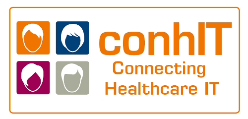
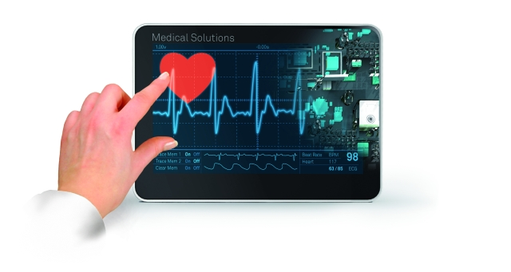

Informationen zu ConhIT:


Die Messe conhIT Berlin ist der Branchentreff für Healthcare IT. Die Messe ist eine hochkarätige und konzentrierte Ausstellungs-, Fortbildungs-, Informations- und Kommunikationsplattform. Die Aussteller der conhIT Messe Berlin bieten dem Besucher eine umfassende Präsentation der Healthcare-IT. Etablierte Lösungen, neueste Technologien und zukünftige Entwicklungen werden auf hohem Niveau ausgestellt. Als integrierte Gesamtveranstaltung vereint die conhIT Berlin Industrie-Messe, Kongress und Akademie sowie verschiedene Networkingangebote unter einem Dach. Die einzelnen Elemente sind dabei inhaltlich sowie zeitlich aufeinander abgestimmt.
